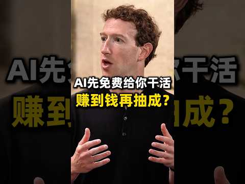

YouTube Shorts｜「先免費幹活、賺錢後再抽成」：Meta AI 商業模式說法的證據邊界

一句話摘要
這支約 2 分 58 秒的 Shorts 以 Mark Zuckerberg 與 Meta AI 為話題，提出一種吸睛的商業模式敘事：「先讓 AI 免費替使用者完成工作，等使用者賺到錢再抽成。」它適合引發對 AI 代理、平台抽成與創作者經濟的討論，但就目前可取得的來源證據，不能把它寫成 Meta 已公告的具體產品條款或收費政策。
可核對的來源資訊
- 影片標題：扎克伯格把AI收费倒过来了：先免费干活，赚钱后再抽成 #ai #科技 #meta #muse #shorts
- 頻道：昌健胡說
- YouTube 影片 ID：5B9dlrgLM9E
- 發布時間：2026-09-24 06:42:19（影片頁中繼資料時區為 -07:00）
- 長度：178 秒
- 類型：People & Blogs
- 來源頁面：
https://www.youtube.com/watch?v=5B9dlrgLM9E
影片可見主張
縮圖文字直接寫著：「AI先免費給你幹活，賺到錢再抽成？」標題則把此想法連到 Zuckerberg、Meta、AI 與「muse」。這可視為影片作者對未來 AI 商業化的解讀或推測。
如果採這個模型，平台不會主要以固定月費收費，而是把 AI 當成能協助生產、銷售、開發或經營的工作單位，再從成功結果中分成。它與既有的 SaaS 訂閱、API 用量計費、廣告、應用程式商店分潤並不相同。
為什麼要保留，但不能直接照單全收
「結果導向抽成」對使用者很有吸引力：前期成本低，只有產生收入時才付款。但實務上它需要先回答一連串關鍵問題：
- 什麼叫「賺到錢」？是營收、毛利、淨利，還是平台內的交易額？
- AI 的貢獻要如何歸因？若同時使用多個工具、人類團隊與廣告投放，抽成依據是什麼？
- 平台是否需要讀取銷售、支付或客戶資料？其隱私、授權與資料保留規則為何？
- AI 產物造成侵權、違規、退款或廣告帳號風險時，責任由誰承擔？
- 若使用者要轉移到其他平台，資料、客戶關係與自動化流程是否可攜？
因此，即使未來出現類似方案，也應把它當成需要審閱條款、資料邊界、抽成計算與退出機制的商業合作，而不只是「免費 AI」。
證據限制與待查事項
本影片的 YouTube 逐字稿已停用，影片頁面的文字說明亦為空白。縮圖可辨識 Mark Zuckerberg 與上述提問式文案；但目前沒有影片內可驗證的逐字內容、引用來源或 Meta 官方公告連結可供交叉核對。
「Meta」「muse」及「先免費幹活、賺錢後抽成」在此條目中均保留為影片標題／縮圖層級的說法。它們不代表本文已確認某項名為 Muse 的 Meta 產品，亦不代表 Meta 已採用或承諾上述收費機制。若後續取得影片引用的原始新聞、Meta 公告或完整字幕，應更新此條目並重新區分官方事實與評論。
對 AI 導入的實務提醒
- 對「免費、保證賺錢、事後抽成」類敘事，先找官方定價頁與服務條款。
- 不將支付、客戶、廣告帳號或營收資料交給第三方工具，直到確認資料用途與撤銷機制。
- 將 AI 代理帶來的收入、成本、人工審核和失敗案例分開記錄，才能評估真實 ROI。
- 正式商業使用前，要為內容權利、個資、稅務、退款與平台封號建立人為覆核點。